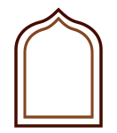

website tajine2go.be
QR Instagram
aan te leveren
Volg ons
@tajine2go.gent
aan te leveren
QR Facebook
aan te leveren
Bezoek onsaan te leveren
Bsaha
A4, 210 × 297 mm. De boognis loopt over de volle hoogte: buitenste boog in saffraangoud, binnenboog overal 26 mm naar binnen, met het khatam-patroon in saffraanlijn in de band ertussen en een papieren vlak erin dat tot de onderrand doorloopt. Alle drie de QR-codes staan binnen die nis, elk in een eigen kleine boognis.

Nog aan te leveren. De QR-codes voor Instagram en Facebook staan als leeg vak; die mag ik niet genereren — QR-codes worden altijd exact overgenomen. Bezorg ze als SVG en ik plaats ze in de nissen. De Instagram- en Facebook-iconen komen van Lucide via CDN, als voorlopige substitutie.